Biesbosch
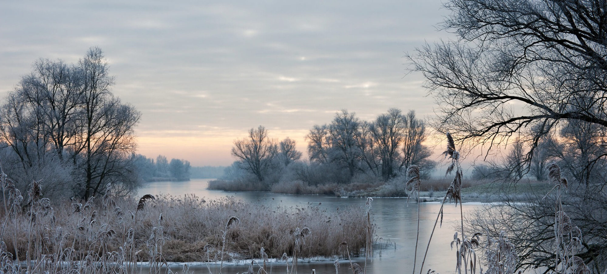
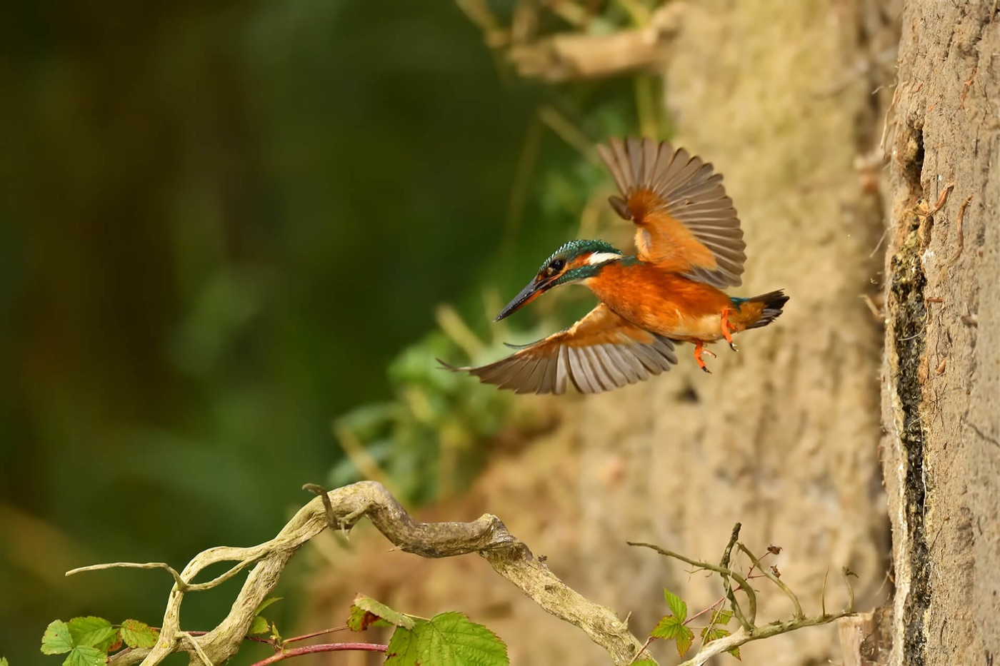

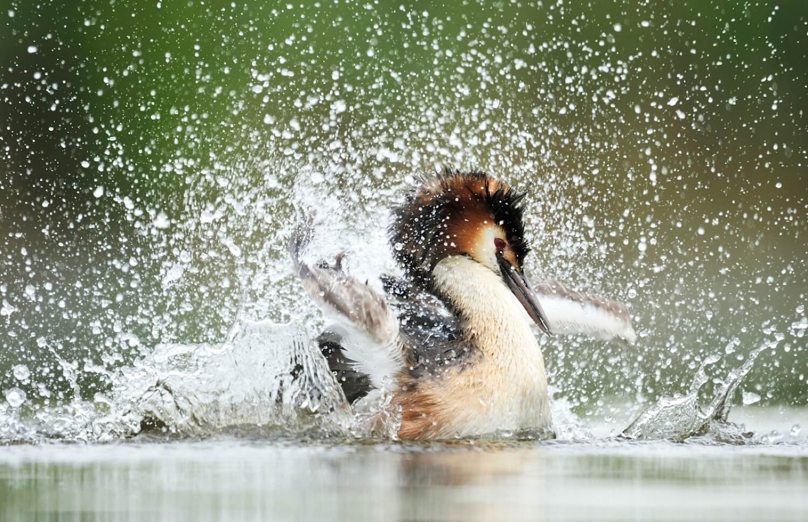
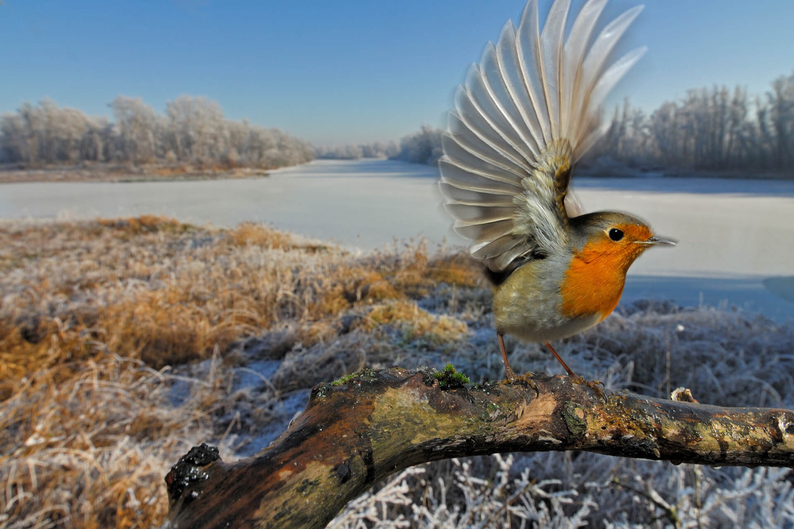
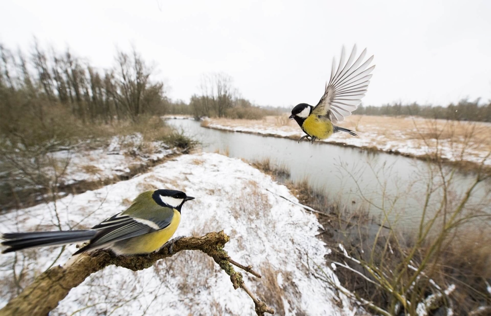


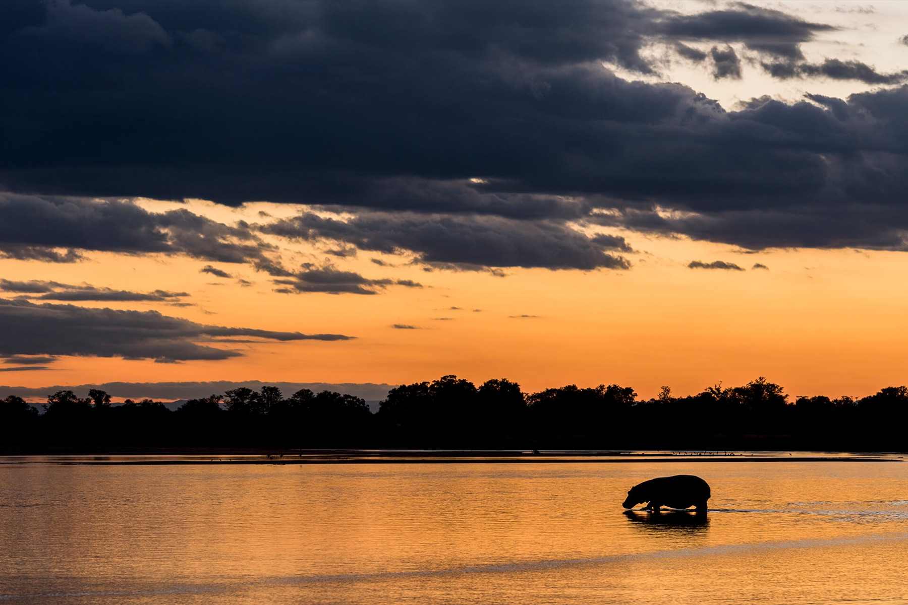
Biesbosch, Bayerischer Wald, Helgoland en Zambia. Alle foto's zijn van Marco zelf.





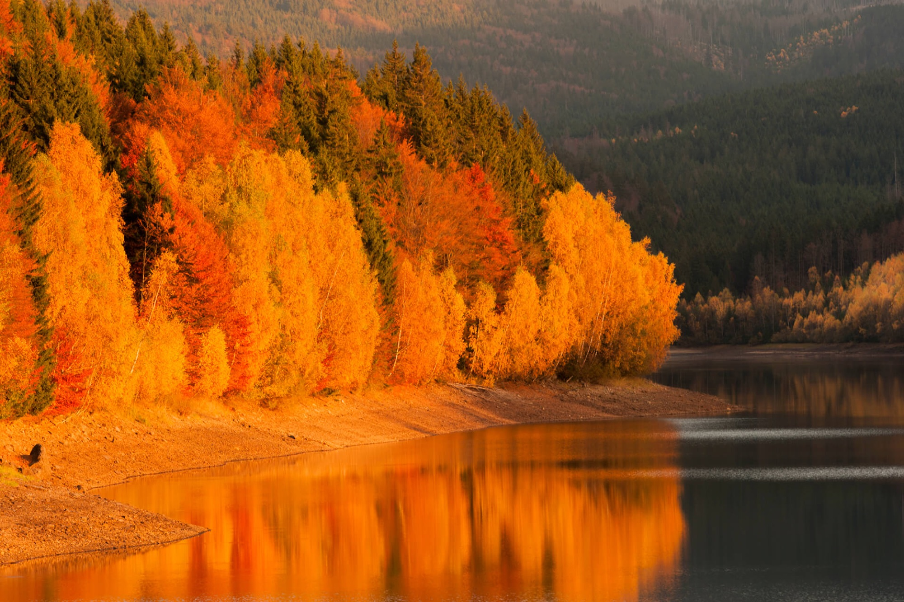

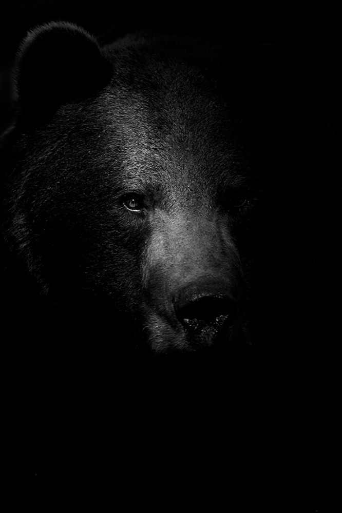


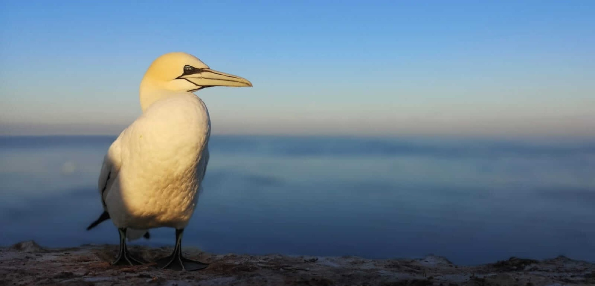

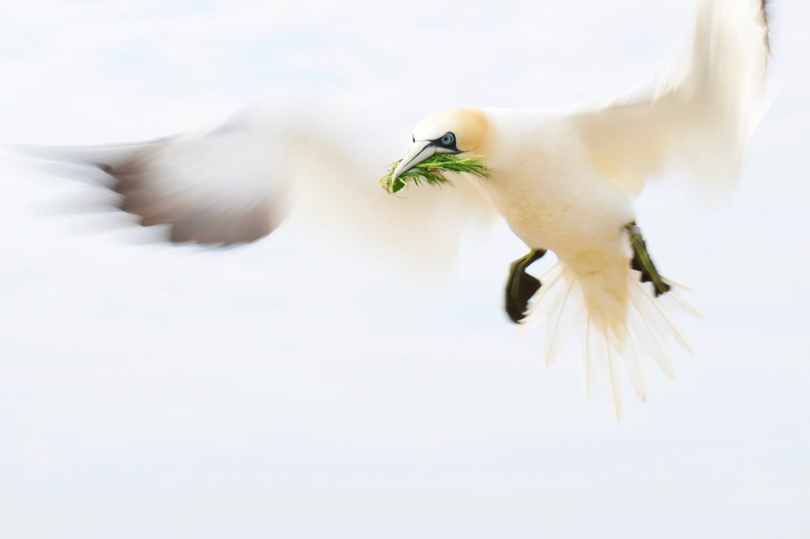


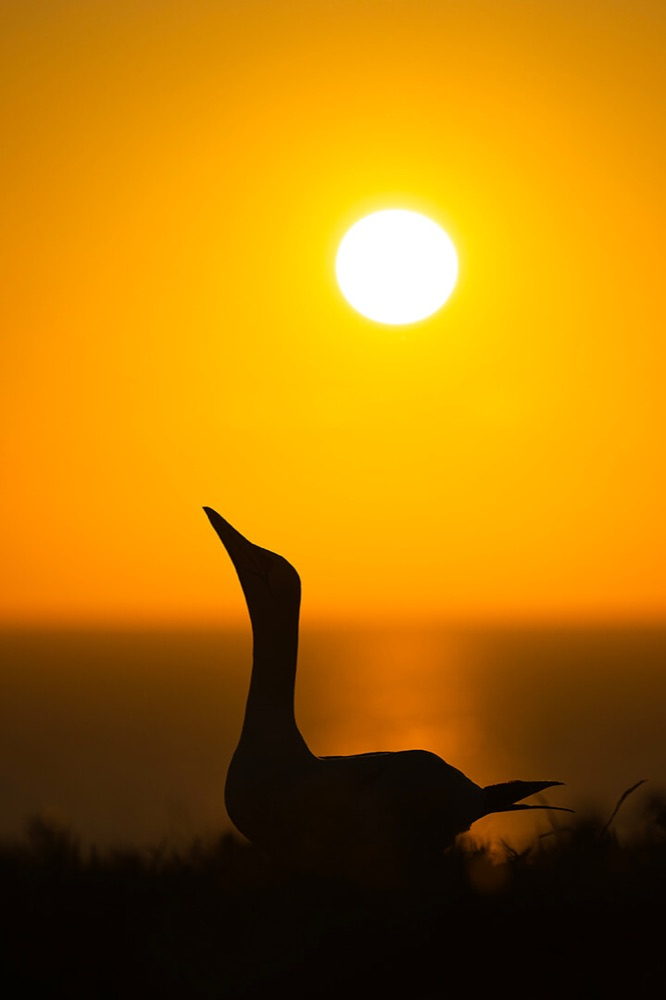
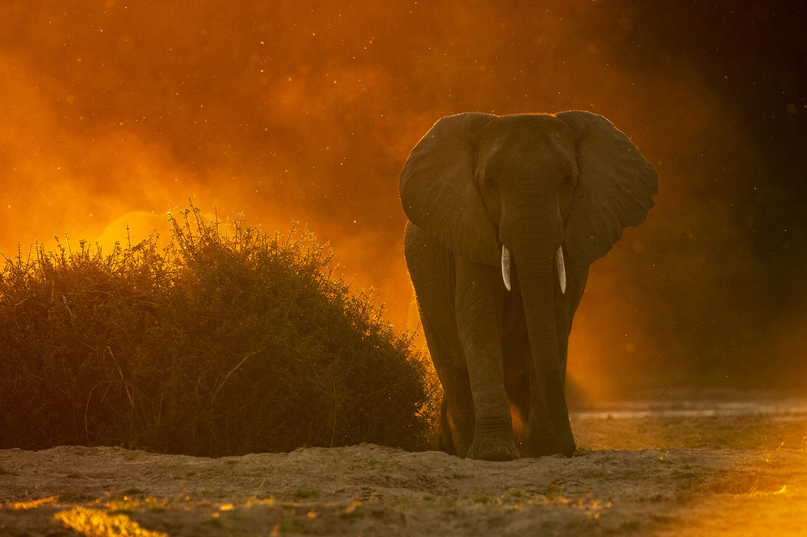


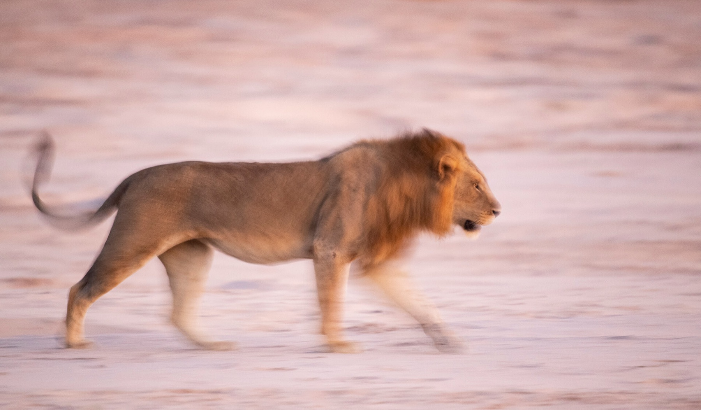

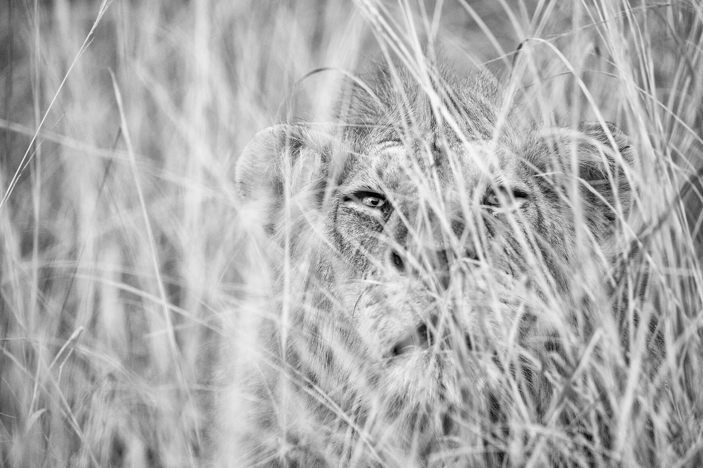

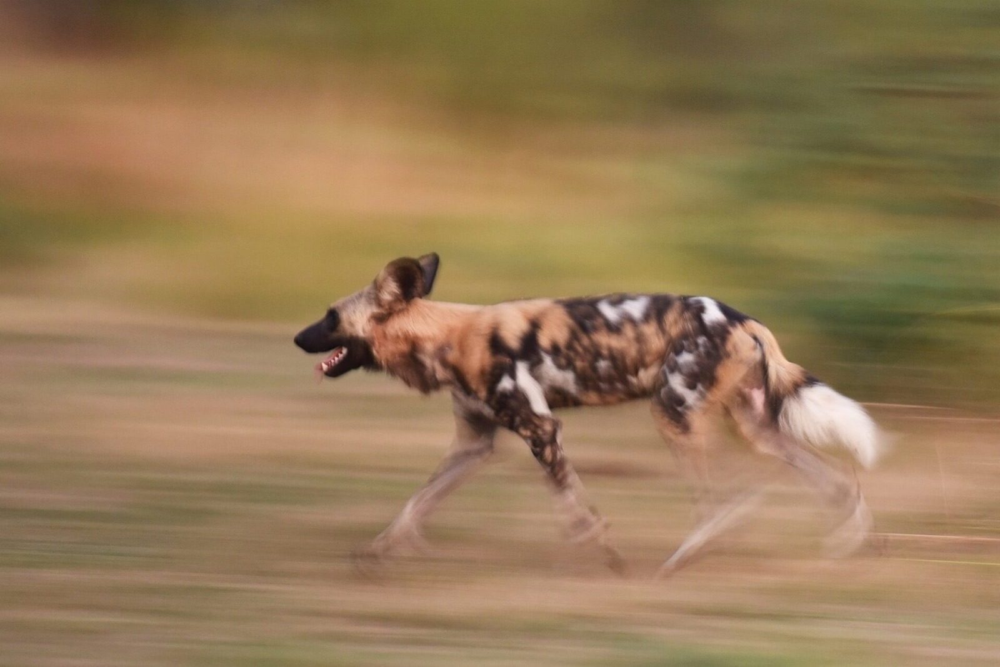

Wil je meer weten over een workshop of fotoreis? Of wil je een foto bestellen? Stuur Marco de Paauw een WhatsApp-bericht.
+31 6 265 885 62
Stuur een WhatsApp-bericht